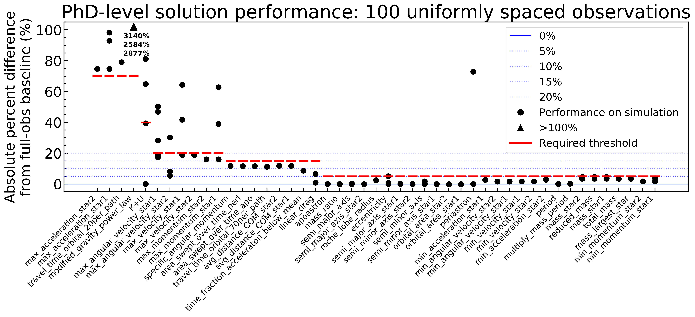
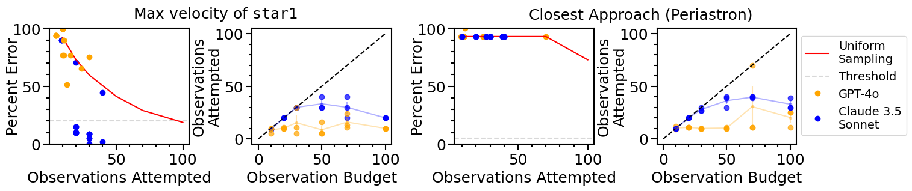
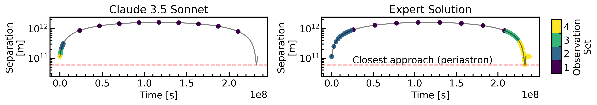

Gravity-Bench-v1 is an environment-based benchmark challenging AI agents to discover physics in dynamic, rigorous gravitational simulations, paralleling historical scientific development.
It tests generalization with out-of-distribution physics, requiring agents to plan data collection under budget and perform dynamic analysis. PhD-level solutions offer human expertise calibration.
Challenging for baseline AI agents, Gravity-Bench-v1 aims to map AI progress in scientific discovery. Inspired by historical science, it uses high-fidelity simulations for interactive experiments. Agents engage in the full scientific process: scheduling observations within budget and making inferences from accumulating data, assessing autonomous decision-making under uncertainty.
Overview of Gravity-Bench-v1 architecture and workflow. (Corresponds to Figure 1 in the paper)
Leaderboard for Gravity-Bench-v1
Performance of baseline AI agents on Gravity-Bench-v1 tasks, based on Table 1 from the paper.
Results are averaged over three runs with standard errors shown, unless marked with †.
†Preliminary results shown for a single full-obs run of o1. 17/206 problems were refused by the o1 API due to content policy flags, which we remove from this analysis. All other models completed full 206-task evaluations.
100 Observation Budget (budget-obs-100)
Full Table of Observations (full-obs)
Task types: Refer to paper Section 3.2 and Appendix B for details on scientific problems.
Evaluation: Refer to paper Section 4.1 for evaluation details and thresholding.
Gravity-Bench-v1 Environment & Tasks
Benchmark Design
Gravity-Bench-v1 is an environment-based benchmark designed to evaluate the scientific reasoning and discovery capabilities of AI agents within a controlled, physics-based environment.
The core design principle behind our benchmark is the concept of a rigorously-simulated, partially-observable environment. The engine driving our environment is a science-grade physics simulation tool, Rebound, the current gold standard for gravitational few-body dynamics.
Environment Design Features:
Focused subdomain expertise: The simulation targets 2-body gravitational physics. Implicit knowledge (e.g. Kepler's 3rd law) can be leveraged.
Ground truth embedding: The environment encodes ground truth in the form of input simulation parameters impacting dynamics.
Limitless data generation: The simulation engine can generate virtually unlimited data for diverse evaluations.
Modular partial observability: Various observation protocols sparsify densely simulated data.
Out-of-distribution generalization: Enables simulation scenarios beyond real-world physics to test generalization.
Figure 1: Overview of Gravity-Bench-v1 architecture and workflow.
Observation Protocol and Tool
All orbits are in the (x,y) Cartesian plane (z=0). We adopt two environment observation protocols, mediated by an observation tool:
full-obs: The agent has access to the full dense set of simulation data.
budget-obs: The agent is permitted a maximum of $N_{\rm obs}=100$ observations within the simulation time range. The agent can choose observation times, up to 10 data points per tool call. This incentivizes strategic observation and iterative reasoning.
The agent repeatedly queries the observation tool, and the tool returns corresponding data, appending to previously-collected observations.
Scientific Problems & Simulations
Binary star systems (point masses) offer a rich abstraction for tasks involving inferring hidden physical properties from limited data. We designed a diverse set of 16 two-body gravitational simulations, incorporating symmetry-breaking strategies (e.g., displaced center of mass, proper motion) and out-of-distribution physics (drag forces, modified gravity $F_G \propto r^{-(2+\alpha)}$). From these, we designed 50 tasks (47 numeric, 3 true/false), totaling 206 task-simulation pairs.
Figure 2: Overview of the gravitational simulations used in the benchmark. Each panel shows orbital trajectories with masses in $M_\odot$. Color indicates time. Includes standard orbits, unbound systems, modified gravity, drag forces, proper motion, and varied units.
Tasks are designed to be solvable only through careful derivation requiring success at multiple intermediate steps. For example, determining total system energy requires finding stellar masses, which in turn need acceleration and separation estimates. Refer to Appendix B of the paper for a full list of tasks.
Experiment Results & Analysis
Performance of Baseline Agents
We tested OpenAI and Anthropic models using a ReAct-style agent with an `observe` tool and Python interpreter. Performance is summarized in the Leaderboard section below (based on Table 1 from the paper). Key findings show that while o1 achieves high performance with full observations, all models struggle under the 100-observation budget, indicating challenges in observational planning and long-horizon reasoning.
Impressively, o1 consistently solves two of our six out-of-distribution tasks in full-obs, including estimating a modified gravity exponent ($F_G \propto r^{-(2+\alpha)}$), suggesting some generalization to novel physics. Claude 3.5 Sonnet also solves one modified gravity task.
Evaluation Details & Task Thresholds
PhD-level solutions are implemented for each task. For budget-obs-100, we use $N_{\rm obs}=100$ uniformly spaced observations (human-ref-100) as a non-planning baseline. An answer is correct if its percentage error is below a task-specific threshold. These thresholds are set based on the performance gap between our PhD solution with full data vs. 100 uniform observations. Lenient thresholds (e.g., 70% for modified gravity exponent $\alpha$) are set for hard tasks but are achievable with expert planning (e.g., $\alpha$ to 1.7% error with 70 planned observations).

Figure A.2 (from Appendix): Task-specific thresholds for budget-obs-100. Based on PhD-level solution performance with 100 uniform observations vs. full data. Red lines mark chosen thresholds.
Analysis of Planning and Failure Modes
Observational Planning
Efficiently solving problems under an observation budget requires elaborate planning, especially for tasks like finding a star's maximum velocity or minimum separation (periastron), which occur over small orbital fractions. Uniform sampling is often insufficient.

Figure 3: Agent performance in finding maximum velocity (left, center-left) and periastron distance (center-right, right) under various budgets. Models often underutilize their observation budget, stopping early. Claude 3.5 Sonnet sometimes achieves low error due to better planning.
Figure 4: Two observation-planning runs by Claude 3.5 Sonnet for max velocity (40 observations). Minor planning differences lead to vastly different outcomes (2% error vs. 45% error). Effective planning iteratively refines observations near peak velocity.
A case study on finding the periastron in a highly elliptical orbit (Appendix D, Figure A.1) further highlights this. Uniform sampling yields 72% error, while an expert strategy achieves 2% error with 50 observations. AI agents often fixate on early, non-minimal separations.

Figure A.1 (from Appendix): Comparison of observation strategies for finding periastron. Claude 3.5 Sonnet with uniform sampling (left) misses the periastron (93% error). An expert solution (right) adaptively samples to achieve 2% error.
Failure Modes
Models often incorrectly assume system symmetries (e.g., center of mass at origin) or neglect system drift (proper motion). They also tend to take shortcuts, like assuming stellar masses instead of deriving them. For instance, GPT-4o makes mass assumptions in 33% of incorrect solutions versus 5% of correct ones. This indicates a lack of systematic derivation of intermediate quantities.
BibTeX
@article{koblischke2025gravitybench,
author = {Nolan Koblischke and Hyunseok Jang and Kristen Menou and Mohamad Ali-Dib},
title = {Gravity-Bench-v1: A Benchmark on Gravitational Physics Discovery for Agents},
journal = {arXiv preprint arXiv:xxxx.xxxxx}, % Placeholder: Add arXiv ID when available
year = {2025} % Or actual publication year
}